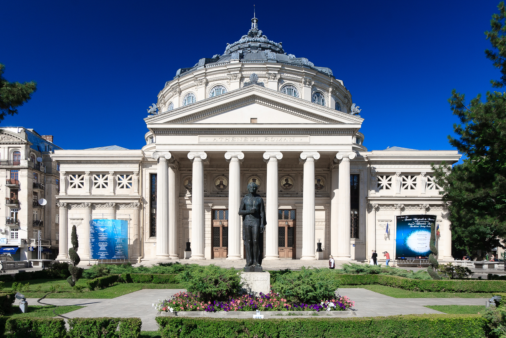
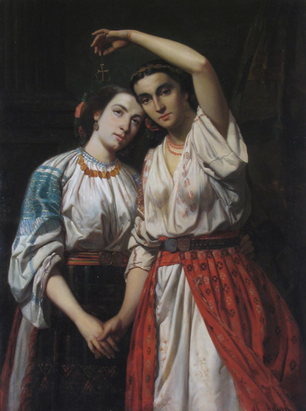
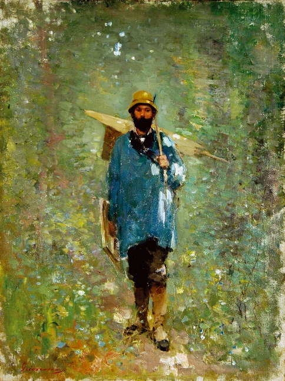

Annex I · Hanul lui Manuc
One courtyard contains the whole borderland.
Une cour contient toute la marche.
Built in 1808 by Manuc Mârzaian—an Armenian merchant and diplomat known as Manuc Bei—the inn stood beside Bucharest’s princely court. Turkish, Bulgarian and Greek merchants met Transylvanian carters and German peddlers here. Languages, goods and loyalties crossed under one roof.
Construit en 1808 par Manuc Mârzaian — marchand et diplomate arménien connu sous le nom de Manuc Bei — le han s’élevait près de la cour princière de Bucarest. Marchands turcs, bulgares et grecs y rencontraient voituriers transylvains et colporteurs allemands. Langues, marchandises et fidélités passaient sous un même toit.


1812
Then the empires entered the courtyard.
Alors les empires entrèrent dans la cour.
The peace between the Ottoman and Russian empires was signed here. Eastern Moldavia—Bessarabia—was ceded to Russia. The inn’s story therefore contains both sides of the borderland: exchange among Armenian, Jewish, Greek, Saxon and Romanian traders, and decisions by empires over the heads of those peoples.
La paix entre les empires ottoman et russe fut signée ici. La Moldavie orientale — la Bessarabie — fut cédée à la Russie. Le han réunit ainsi les deux vérités de la frontière : l’échange entre marchands arméniens, juifs, grecs, saxons et roumains, et les décisions impériales prises au-dessus d’eux.
Romania’s mixture is an old fact, not a recent fashion. Its freedom has depended throughout on the political order that gives it a home.La diversité roumaine n’est pas une mode récente, mais un fait ancien. Sa liberté dépend de l’ordre politique qui lui donne une demeure.
Annex II · Architecture
Ideas become stone.
Les idées deviennent pierre.
Bucharest’s European ambition was built, not merely proclaimed. The Romanian Athenaeum was designed by the French architect Albert Galleron, recommended by Charles Garnier of the Paris Opera. In Transylvania, the Saxon city remains legible in Sibiu/Hermannstadt. Europe arrived through more than one door.
L’ambition européenne de Bucarest fut bâtie, non seulement proclamée. L’Athénée roumain fut conçu par l’architecte français Albert Galleron, recommandé par Charles Garnier, auteur de l’Opéra de Paris. En Transylvanie, la ville saxonne reste lisible à Sibiu/Hermannstadt. L’Europe est entrée par plusieurs portes.



Not a borrowed costume: a country learning to see itself inside a wider European frame.Non un costume emprunté : un pays qui apprend à se voir dans un cadre européen plus vaste.
Annex III · Art
They learned to see in France. They painted a country at home.
Ils apprirent à voir en France, puis peignirent leur pays.
The encounter with French painting did not erase Romanian subjects. It helped give them a modern visual grammar. The National Museum of Art describes Aman, Grigorescu and Andreescu as masters through whom French painting served the search for a national visual identity.
La rencontre avec la peinture française n’efface pas les sujets roumains. Elle leur donne une grammaire visuelle moderne. Le Musée national d’art présente Aman, Grigorescu et Andreescu comme les maîtres par lesquels la peinture française nourrit la recherche d’une identité visuelle nationale.


The borrowed form was not the point. It was how a country became visible to itself.La forme empruntée n’était pas la destination, mais l’instrument par lequel un pays devint visible à lui-même.
Annex IV · Language
Romanian is Latin at its core. Its vocabulary keeps the map of every encounter.
Le roumain est latin jusqu’au fond. Son vocabulaire garde la carte de chaque rencontre.
Its grammar is Eastern Romance. Its words remember neighbours, churches, empires and Paris. Percentages change with the corpus; the contrast between the everyday core and the whole dictionary is the historical point.
Sa grammaire est romane orientale. Ses mots gardent la mémoire des voisins, des Églises, des empires et de Paris. Les pourcentages varient selon le corpus ; le contraste entre le noyau quotidien et le dictionnaire entier est précisément la leçon historique.
A representative 2,581-word vocabulary
The remainder includes Italian, German, Greek, Hungarian, internally formed words, substrate and unknown-origin items. “Classical Latin” means learned Latin loans, not inherited Latin. Chart and figures: Marius Sala (ed.), Vocabularul reprezentativ al limbilor romanice, Bucharest, 1988 — 2,581 words selected by frequency, semantic richness and productivity.
Latin made Romanian a language. French helped make it a language of citizenship, law and public possibility.Le latin a fait du roumain une langue. Le français l’a aidé à devenir une langue de citoyenneté, de droit et de possibilité publique.
Annex V · The Paris generation
Ideas crossed Europe in the luggage of people.
Les idées traversèrent l’Europe dans les bagages des hommes.
Paris mattered because a generation could meet there, recognise itself and return with a repertoire for action. Lectures, newspapers, salons and barricades made the abstract portable.
Paris compta parce qu’une génération put s’y rencontrer, se reconnaître et revenir avec un répertoire d’action. Cours, journaux, salons et barricades rendirent l’abstrait transportable.


Paris gave this elite a Europe larger than the empires surrounding home.Paris donna à cette élite une Europe plus vaste que les empires qui entouraient le pays.
Annex VI · Maps
Borders move. The direction of pressure remains legible.
Les frontières bougent. Le sens de la pression reste lisible.
The map is not destiny. It is accumulated experience. Romania’s nineteenth-century Western turn was made by people who had watched nearby empires repeatedly decide the fate of the principalities. The land those empires moved across was not empty: the 1897 census of Bessarabia counted its people by language as 47.6% Romanian, 19.6% Ukrainian, 11.8% Jewish, 8.0% Russian, 5.3% Bulgarian and 3.1% German.
La carte n’est pas un destin, mais une expérience accumulée. Le tournant occidental du XIXe siècle fut choisi par des hommes qui avaient vu les empires voisins décider à plusieurs reprises du sort des principautés. La terre que ces empires traversaient n’était pas vide : le recensement de 1897 en Bessarabie comptait, par langue, 47,6 % de roumains, 19,6 % d’ukrainiens, 11,8 % de juifs, 8 % de russes, 5,3 % de Bulgares et 3,1 % d’Allemands.

- 1812Russia annexes eastern Moldavia—Bessarabia—through the treaty signed at Manuc’s Inn.
- 1856After the Crimean War, southern Bessarabia returns to Moldavia and the path toward union opens.
- 1878Romania wins independence beside Russia, then loses southern Bessarabia to its ally.
- 1940The USSR occupies Bessarabia and Northern Bukovina; deportation and Russification follow.
Geography does not command the future. It does tell a small state which promises require institutions, allies and memory.La géographie ne commande pas l’avenir. Elle indique à un petit État quelles promesses exigent des institutions, des alliés et de la mémoire.